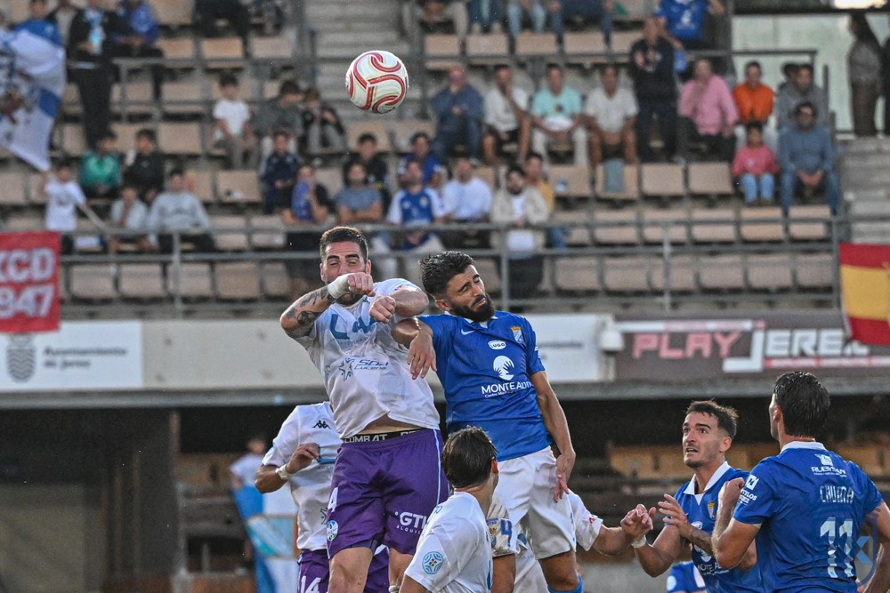

¿Y si pedimos ayuda?

Foto: Diario XerecistaCon Abel Segovia el Xerez ha ganado intensidad y criterio, y la plantilla tiene nivel para mucho más. Pero a un equipo que domina y no gana empieza a pesarle la ansiedad: quizás ha llegado el momento de que la cabeza también se entrene, y de poner a cada jugador en su sitio.
Desde la llegada de Abel Segovia, el Xerez CD ha cambiado su imagen. El equipo juega con intensidad y con criterio, y sabe lo que tiene que hacer en el campo. Lo demostró el domingo ante el Ciudad de Lucena, en un partido que dominó de principio a fin y que perdió en el minuto 89. Pero los resultados no acompañan, con cuatro puntos de nueve posibles con el nuevo técnico, y la sensación es que todavía hay jugadores que no están en su sitio. El dato lo resume: el Xerez lleva siete balones al palo en siete jornadas de liga.
Zequi, a pierna cambiada
Zequi es un jugador con mucha clase, pero se insiste en ponerlo por la izquierda, a pierna cambiada. Por la derecha, Guille Campos le da robustez al lateral; lo que falta después es el centro, ese último pase que convierta la llegada en ocasión.
El balón parado, una oportunidad perdida
Hay un recurso que el Xerez no está aprovechando: los córneres y las jugadas a balón parado. Ningún córner se lanza al primer palo, una variante que podría sorprender a las defensas rivales.
Fali, en el centro de la defensa
Fali tiene que jugar, pero de central. El domingo, en sus minutos en el eje de la zaga, demostró que tiene criterio para sacar el balón jugado. El problema es a quién quitar, porque todos los centrales están a un nivel enorme.
Un rombo con criterio al que le falta chispa
En el centro del campo, el equipo forma un rombo con Raúl López, Mario Peregrina, Zequi y Jaime Fernández. Juegan con criterio, pero quizás les falta esa pizca de creatividad que aportan Jaime López e Ismael. Bittor Isuskiza es un gran jugador, pero es para cuando quieres parar un partido: le da tranquilidad al centro del campo.
Arriba, entre la ansiedad y el esfuerzo
En la delantera, Rubén Mesa está tan ansioso por marcar que quizás esa misma ansiedad le está frenando. Y de Chuma no hay nada que decir: dos goles en liga, y se deja el alma en cada partido.
La cabeza también juega
Quizás sería bueno que el equipo trabajara con una psicóloga, antes de que los propios jugadores dejen de verse capaces de levantar la situación. Porque esta es una buena plantilla y, poco a poco, también se está construyendo un buen equipo. Hay motivos para confiar en él. Pero quizás ha llegado la hora de poner a cada jugador en su sitio.
🇬🇧 Read in English ← Volver a la portada